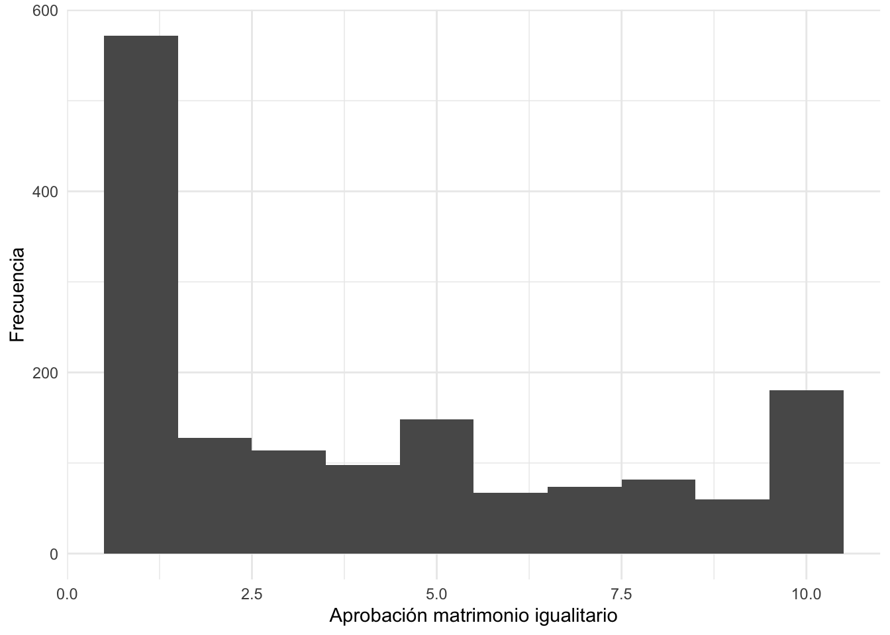
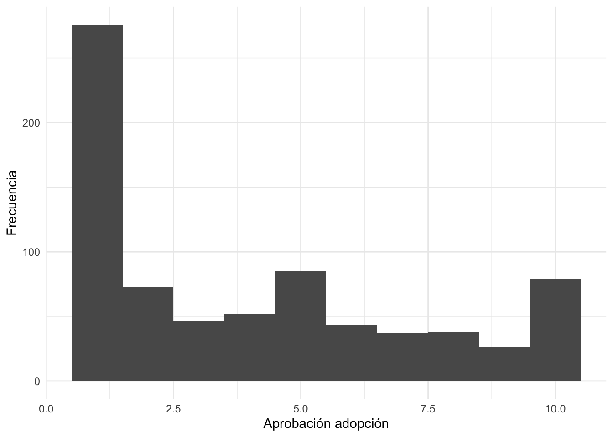
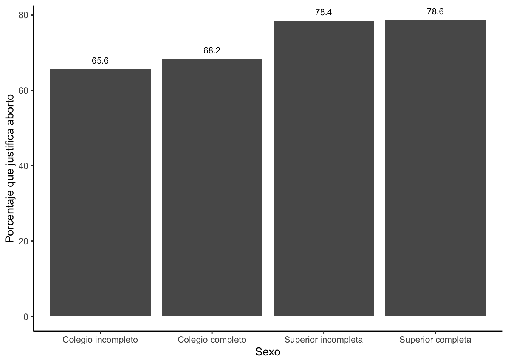
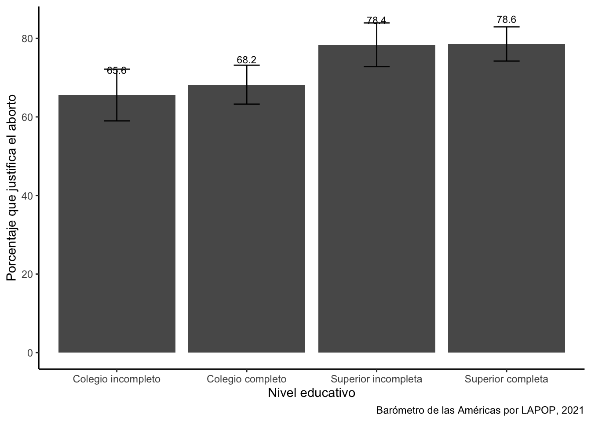
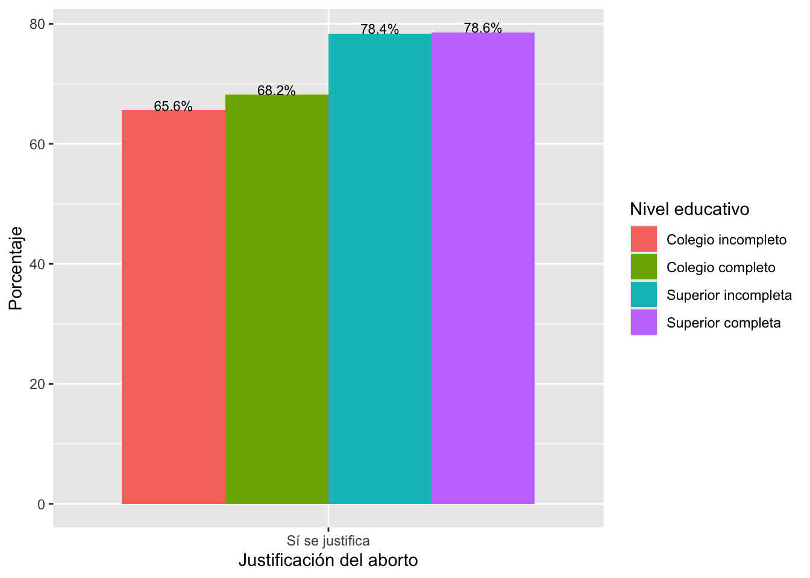
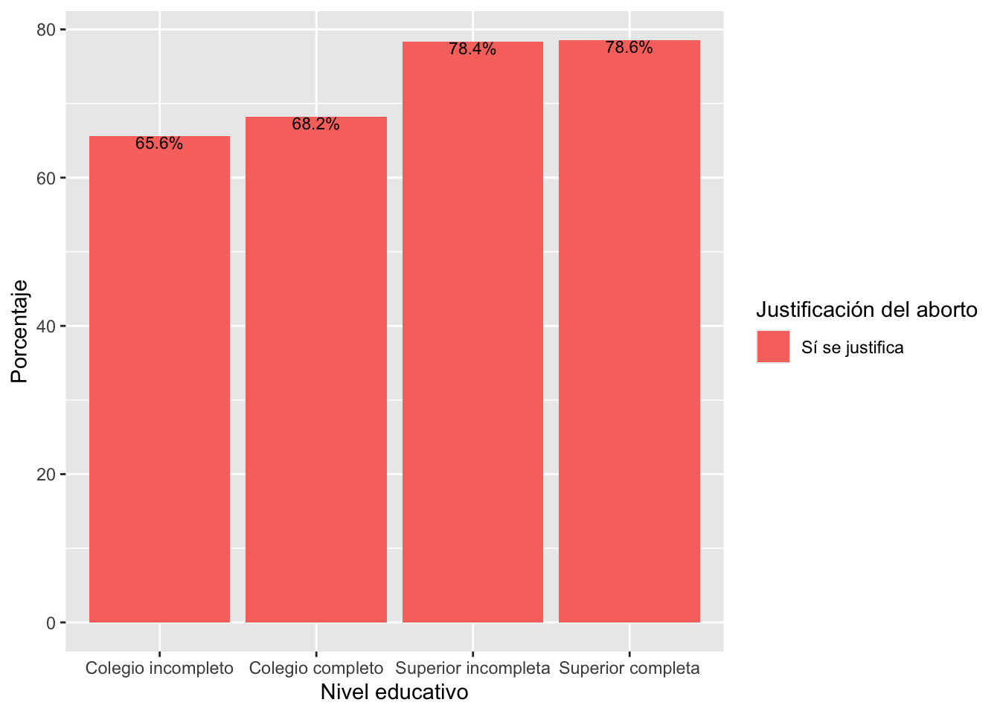

Repaso
Analizando opinión pública
library(rio)
peru23 = import("bases/PER_2023_LAPOP_AmericasBarometer_v1.0_w.sav")Describir una variable numérica
library(tidyverse)## ── Attaching core tidyverse packages ──────────────────────── tidyverse 2.0.0 ──
## ✔ dplyr 1.1.4 ✔ readr 2.1.5
## ✔ forcats 1.0.0 ✔ stringr 1.5.1
## ✔ ggplot2 3.5.1 ✔ tibble 3.2.1
## ✔ lubridate 1.9.3 ✔ tidyr 1.3.1
## ✔ purrr 1.0.2
## ── Conflicts ────────────────────────────────────────── tidyverse_conflicts() ──
## ✖ dplyr::filter() masks stats::filter()
## ✖ dplyr::lag() masks stats::lag()
## ℹ Use the conflicted package (<http://conflicted.r-lib.org/>) to force all conflicts to become errorsperu23 %>%
summarise(Promedio_Matri=mean(d6, na.rm=T),
Mediana_Matri=median(d6, na.rm=T))## Promedio_Matri Mediana_Matri
## 1 4.082731 3peru23 %>%
summarise(Promedio_Adopcion=mean(d7a, na.rm=T),
Mediana_Adopcion=median(d7a, na.rm=T))## Promedio_Adopcion Mediana_Adopcion
## 1 4.023841 3Visualización variable numérica
library(ggplot2)
ggplot(peru23, aes(x=d6))+
geom_histogram(binwidth = 1)+
xlab("Aprobación matrimonio igualitario") +
ylab("Frecuencia")+
theme_minimal()## Warning: Removed 12 rows containing non-finite outside the scale range
## (`stat_bin()`).
ggplot(peru23, aes(x=d7a))+
geom_histogram(binwidth = 1)+
xlab("Aprobación adopción") +
ylab("Frecuencia")+
theme_minimal()## Warning: Removed 780 rows containing non-finite outside the scale range
## (`stat_bin()`).
Comparando variable numérica entre grupos
peru23 = peru23 %>%
mutate(educ = case_when(
edre <= 3 ~ 1,
edre == 4 ~ 2,
edre == 5 ~ 3,
edre == 6 ~ 4,
))peru23 = peru23 %>%
mutate(educ2 = factor(educ, labels=c("Colegio incompleto",
"Colegio completo",
"Superior incompleta",
"Superior completa")))peru23 %>%
group_by(educ2) %>%
summarise(Promedio_Matri=mean(d6, na.rm=T),
Mediana_Matri=median(d6, na.rm=T))## # A tibble: 4 × 3
## educ2 Promedio_Matri Mediana_Matri
## <fct> <dbl> <dbl>
## 1 Colegio incompleto 3.24 1
## 2 Colegio completo 3.97 3
## 3 Superior incompleta 4.83 5
## 4 Superior completa 4.34 4Graficando la comparación
ggplot(peru23, aes(y=d6, x=educ2))+
geom_boxplot()+
ylab("Aprobación matrimonio igualitario")+
xlab("Nivel educativo")+
theme_get()## Warning: Removed 12 rows containing non-finite outside the scale range
## (`stat_boxplot()`).
Describir una variable categórica
peru23 = peru23 %>%
mutate(aborto = factor(w14a, labels=c("Sí se justifica",
"No se justifica")))tabla1 = peru23 %>%
filter(aborto == "Sí se justifica" | aborto == "No se justifica") %>%
count(Aborto = aborto, name="Frecuencia")
tabla1## Aborto Frecuencia
## 1 Sí se justifica 1090
## 2 No se justifica 414tabla1 = tabla1 %>%
mutate(Porcentaje = (Frecuencia / sum(Frecuencia)*100 ))
tabla1## Aborto Frecuencia Porcentaje
## 1 Sí se justifica 1090 72.4734
## 2 No se justifica 414 27.5266Visualización variable factor
graf1 = ggplot(tabla1, aes(x=Aborto,y=Porcentaje))+
geom_bar(stat="identity", width=0.5)
graf1
Comparando variable factor entre grupos
tabla2 = peru23 %>%
filter(aborto == "Sí se justifica" | aborto == "No se justifica") %>%
group_by(educ2) %>%
count(Aborto = aborto, name="N") %>%
mutate(total = sum(N),
Por = N / total * 100,
err = sqrt(Por*(100-Por)/N),
liminf = Por - 1.96*err,
limsup = Por + 1.96*err)
tabla2## # A tibble: 8 × 8
## # Groups: educ2 [4]
## educ2 Aborto N total Por err liminf limsup
## <fct> <fct> <int> <int> <dbl> <dbl> <dbl> <dbl>
## 1 Colegio incompleto Sí se justifica 200 305 65.6 3.36 59.0 72.2
## 2 Colegio incompleto No se justifica 105 305 34.4 4.64 25.3 43.5
## 3 Colegio completo Sí se justifica 339 497 68.2 2.53 63.3 73.2
## 4 Colegio completo No se justifica 158 497 31.8 3.70 24.5 39.1
## 5 Superior incompleta Sí se justifica 210 268 78.4 2.84 72.8 83.9
## 6 Superior incompleta No se justifica 58 268 21.6 5.41 11.0 32.2
## 7 Superior completa Sí se justifica 341 434 78.6 2.22 74.2 82.9
## 8 Superior completa No se justifica 93 434 21.4 4.25 13.1 29.8tabla2 = tabla2[-c(2,4, 6, 8),]Graficando la comparación
graf2 = ggplot(tabla2, aes(x=educ2, y=Por))+
geom_bar(stat="identity")+
geom_text(aes(label=paste(round(Por, 1))), vjust=-1, size=3)+
labs(x="Sexo", y="Porcentaje que justifica aborto")+
theme_classic()
graf2
Comparando variables numéricas con intervalos de confianza
library(lsr)
tabla3 = peru23 %>%
group_by(educ2) %>%
summarise(Promedio_Matri=mean(d6, na.rm=T),
Desv_Matri=sd(d6, na.rm=T),
liminf = ciMean(d6, na.rm=T)[1],
limsup = ciMean(d6, na.rm=T)[2])
tabla3## # A tibble: 4 × 5
## educ2 Promedio_Matri Desv_Matri liminf limsup
## <fct> <dbl> <dbl> <dbl> <dbl>
## 1 Colegio incompleto 3.24 3.05 2.90 3.58
## 2 Colegio completo 3.97 3.15 3.70 4.25
## 3 Superior incompleta 4.83 3.41 4.42 5.24
## 4 Superior completa 4.34 3.29 4.04 4.65Graficando comparación de IC para variable numérica
graf3 = ggplot(tabla3, aes(x=educ2, y=Promedio_Matri))+
geom_bar(stat="identity")+
geom_errorbar(aes(ymin=liminf, ymax=limsup), width=0.2)+
geom_text(aes(label=round(Promedio_Matri, 1)), vjust=-2.8, size=3)+
xlab("Nivel educativo") + ylab("Aprobación matrimonio igualitario")+
ylim(0, 6)
graf3
Comparando proporciones con intervalos de confianza
tabla4 = peru23 %>%
filter(aborto == "Sí se justifica" | aborto == "No se justifica") %>%
group_by(educ2) %>%
count(Aborto = aborto, name="N") %>%
mutate(total = sum(N),
Por = N / total * 100,
err = sqrt(Por*(100-Por)/N),
liminf = Por - 1.96*err,
limsup = Por + 1.96*err)
tabla4## # A tibble: 8 × 8
## # Groups: educ2 [4]
## educ2 Aborto N total Por err liminf limsup
## <fct> <fct> <int> <int> <dbl> <dbl> <dbl> <dbl>
## 1 Colegio incompleto Sí se justifica 200 305 65.6 3.36 59.0 72.2
## 2 Colegio incompleto No se justifica 105 305 34.4 4.64 25.3 43.5
## 3 Colegio completo Sí se justifica 339 497 68.2 2.53 63.3 73.2
## 4 Colegio completo No se justifica 158 497 31.8 3.70 24.5 39.1
## 5 Superior incompleta Sí se justifica 210 268 78.4 2.84 72.8 83.9
## 6 Superior incompleta No se justifica 58 268 21.6 5.41 11.0 32.2
## 7 Superior completa Sí se justifica 341 434 78.6 2.22 74.2 82.9
## 8 Superior completa No se justifica 93 434 21.4 4.25 13.1 29.8tabla4 = tabla4[-c(2,4,6,8),]graf4 = ggplot(tabla4, aes(x=educ2, y=Por))+
geom_bar(stat="identity")+
geom_errorbar(aes(ymin=liminf, ymax=limsup), width=0.2)+
geom_text(aes(label=paste(round(Por, 1))), vjust=-3, size=3)+
labs(x="Nivel educativo", y="Porcentaje que justifica el aborto",
caption="Barómetro de las Américas por LAPOP, 2021")+
theme_classic()
graf4
Prueba de significancia para variables numéricas dicotómicas
peru23 = peru23 %>%
mutate(sexo = factor(q1tc_r, labels=c("Hombre", "Mujer")))tabla5 = peru23 %>%
group_by(sexo) %>%
summarise(Promedio_Matri=mean(d6, na.rm=T),
Desv_Matri=sd(d6, na.rm=T),
liminf = ciMean(d6, na.rm=T)[1],
limsup = ciMean(d6, na.rm=T)[2])
tabla5## # A tibble: 3 × 5
## sexo Promedio_Matri Desv_Matri liminf limsup
## <fct> <dbl> <dbl> <dbl> <dbl>
## 1 Hombre 3.79 3.17 3.56 4.01
## 2 Mujer 4.38 3.32 4.14 4.61
## 3 <NA> 4.6 3.36 0.426 8.77t.test(d6 ~ sexo, data = peru23)##
## Welch Two Sample t-test
##
## data: d6 by sexo
## t = -3.5255, df = 1510.5, p-value = 0.0004353
## alternative hypothesis: true difference in means between group Hombre and group Mujer is not equal to 0
## 95 percent confidence interval:
## -0.9142069 -0.2605747
## sample estimates:
## mean in group Hombre mean in group Mujer
## 3.789267 4.376658Prueba de significancia para variables numéricas politómicas
anova1 = aov(peru23$d6~peru23$educ2)
summary(anova1)## Df Sum Sq Mean Sq F value Pr(>F)
## peru23$educ2 3 401 133.66 12.9 2.52e-08 ***
## Residuals 1519 15737 10.36
## ---
## Signif. codes: 0 '***' 0.001 '**' 0.01 '*' 0.05 '.' 0.1 ' ' 1
## 12 observations deleted due to missingnesscompara = TukeyHSD(anova1)
compara## Tukey multiple comparisons of means
## 95% family-wise confidence level
##
## Fit: aov(formula = peru23$d6 ~ peru23$educ2)
##
## $`peru23$educ2`
## diff lwr upr
## Colegio completo-Colegio incompleto 0.7285841 0.1293353 1.3278329
## Superior incompleta-Colegio incompleto 1.5858853 0.8926390 2.2791316
## Superior completa-Colegio incompleto 1.1012851 0.4859595 1.7166106
## Superior incompleta-Colegio completo 0.8573012 0.2313543 1.4832480
## Superior completa-Colegio completo 0.3727009 -0.1656712 0.9110730
## Superior completa-Superior incompleta -0.4846002 -1.1259549 0.1567545
## p adj
## Colegio completo-Colegio incompleto 0.0097272
## Superior incompleta-Colegio incompleto 0.0000000
## Superior completa-Colegio incompleto 0.0000267
## Superior incompleta-Colegio completo 0.0024820
## Superior completa-Colegio completo 0.2831338
## Superior completa-Superior incompleta 0.2104477Graficando la comparación politómica
compara.df = as.data.frame(compara[1])
compara.df$compara = rownames(compara.df)graf5 = ggplot(compara.df, aes(x=compara, y=peru23.educ2.diff))+
geom_errorbar(aes(ymin=peru23.educ2.lwr, ymax=peru23.educ2.upr),
width=0.2)+
geom_text(aes(label=paste(round(peru23.educ2.diff, 1))),
vjust=-1, size=3)+
xlab("Comparación") + ylab("Diferencia")+
ylim(-3, 3) +
coord_flip() +
geom_hline(yintercept = 0, color = "red", linetype="dotted") +
theme_classic()
graf5
Tabla de contingencia
tabla6 = table(peru23$aborto, peru23$educ2)
tabla6##
## Colegio incompleto Colegio completo Superior incompleta
## Sí se justifica 200 339 210
## No se justifica 105 158 58
##
## Superior completa
## Sí se justifica 341
## No se justifica 93tabla7 = tabla6 %>%
prop.table(2) %>%
round(3)*100
tabla7##
## Colegio incompleto Colegio completo Superior incompleta
## Sí se justifica 65.6 68.2 78.4
## No se justifica 34.4 31.8 21.6
##
## Superior completa
## Sí se justifica 78.6
## No se justifica 21.4Prueba de significancia para proporciones: Chi cuadrado
prop.test(c(803, 759), c(1610,1412))##
## 2-sample test for equality of proportions with continuity correction
##
## data: c(803, 759) out of c(1610, 1412)
## X-squared = 4.3759, df = 1, p-value = 0.03645
## alternative hypothesis: two.sided
## 95 percent confidence interval:
## -0.075118749 -0.002436544
## sample estimates:
## prop 1 prop 2
## 0.4987578 0.5375354prueba1 = chisq.test(peru23$aborto, peru23$educ2)
prueba1##
## Pearson's Chi-squared test
##
## data: peru23$aborto and peru23$educ2
## X-squared = 24.55, df = 3, p-value = 1.917e-05ggplot(data=tabla4, aes(x=Aborto, y=Por, fill=educ2))+
geom_bar(position = "dodge", stat="identity")+
geom_text(aes(label=paste(round(Por, 1), "%", sep="")),
position = position_dodge(width = 0.9),
vjust=0, size = 3)+
labs(x="Justificación del aborto", y="Porcentaje",
fill="Nivel educativo")
ggplot(data=tabla4, aes(x=educ2, y=Por, fill=Aborto))+
geom_bar(position="stack", stat="identity")+
geom_text(aes(label=paste(round(Por, 1), "%", sep="")),
position = position_stack(), vjust=1, size = 3)+
labs(x="Nivel educativo", y="Porcentaje", fill="Justificación del aborto")
Relación entre dos variables numéricas
ggplot(peru23, aes(x=d6, y=d7a))+
geom_point()+
geom_smooth(method=lm, se=F)+ #agregar línea de tendencia
labs(x="Aprobación de matrimonio igualitario",
y="Aprobación de adopción")+ #para etiquetar los ejes
theme_light()## `geom_smooth()` using formula = 'y ~ x'## Warning: Removed 781 rows containing non-finite outside the scale range
## (`stat_smooth()`).## Warning: Removed 781 rows containing missing values or values outside the scale range
## (`geom_point()`).
modelo1 = lm(peru23$d7a ~ peru23$d6)
summary(modelo1)##
## Call:
## lm(formula = peru23$d7a ~ peru23$d6)
##
## Residuals:
## Min 1Q Median 3Q Max
## -6.2226 -1.3931 -0.5396 1.8506 7.6069
##
## Coefficients:
## Estimate Std. Error t value Pr(>|t|)
## (Intercept) 1.85649 0.15316 12.12 <2e-16 ***
## peru23$d6 0.53661 0.02952 18.18 <2e-16 ***
## ---
## Signif. codes: 0 '***' 0.001 '**' 0.01 '*' 0.05 '.' 0.1 ' ' 1
##
## Residual standard error: 2.633 on 752 degrees of freedom
## (781 observations deleted due to missingness)
## Multiple R-squared: 0.3053, Adjusted R-squared: 0.3044
## F-statistic: 330.5 on 1 and 752 DF, p-value: < 2.2e-16peru23 = peru23 %>%
mutate(mujer = q1tc_r-1)modelo2 = lm(peru23$d7a ~ peru23$d6 + peru23$mujer)
summary(modelo2)##
## Call:
## lm(formula = peru23$d7a ~ peru23$d6 + peru23$mujer)
##
## Residuals:
## Min 1Q Median 3Q Max
## -6.3401 -1.5450 -0.6761 1.7911 7.7294
##
## Coefficients:
## Estimate Std. Error t value Pr(>|t|)
## (Intercept) 1.73783 0.17549 9.903 <2e-16 ***
## peru23$d6 0.53279 0.02964 17.975 <2e-16 ***
## peru23$mujer 0.27434 0.19283 1.423 0.155
## ---
## Signif. codes: 0 '***' 0.001 '**' 0.01 '*' 0.05 '.' 0.1 ' ' 1
##
## Residual standard error: 2.634 on 749 degrees of freedom
## (783 observations deleted due to missingness)
## Multiple R-squared: 0.3071, Adjusted R-squared: 0.3053
## F-statistic: 166 on 2 and 749 DF, p-value: < 2.2e-16LS0tCnRpdGxlOiAiUmVwYXNvIgpvdXRwdXQ6CiAgaHRtbF9kb2N1bWVudDoKICAgIHRvYzogdHJ1ZQogICAgdG9jX2Zsb2F0OiB0cnVlCiAgICBjb2xsYXBzZWQ6IGZhbHNlCiAgICBudW1iZXJfc2VjdGlvbnM6IGZhbHNlCiAgICB0b2NfZGVwdGg6IDEKICAgIGNvZGVfZG93bmxvYWQ6IHRydWUKICAgIHRoZW1lOiBjb3NtbwogICAgaGlnaGxpZ2h0OiB0ZXh0bWF0ZQotLS0KCiMgQW5hbGl6YW5kbyBvcGluacOzbiBww7pibGljYQoKYGBge3J9CmxpYnJhcnkocmlvKQpwZXJ1MjMgPSBpbXBvcnQoImJhc2VzL1BFUl8yMDIzX0xBUE9QX0FtZXJpY2FzQmFyb21ldGVyX3YxLjBfdy5zYXYiKQpgYGAKCiMjIERlc2NyaWJpciB1bmEgdmFyaWFibGUgbnVtw6lyaWNhCgpgYGB7cn0KbGlicmFyeSh0aWR5dmVyc2UpCnBlcnUyMyAlPiUKICBzdW1tYXJpc2UoUHJvbWVkaW9fTWF0cmk9bWVhbihkNiwgbmEucm09VCksIAogICAgICAgICAgICBNZWRpYW5hX01hdHJpPW1lZGlhbihkNiwgbmEucm09VCkpCmBgYAoKYGBge3J9CnBlcnUyMyAlPiUKICBzdW1tYXJpc2UoUHJvbWVkaW9fQWRvcGNpb249bWVhbihkN2EsIG5hLnJtPVQpLCAKICAgICAgICAgICAgTWVkaWFuYV9BZG9wY2lvbj1tZWRpYW4oZDdhLCBuYS5ybT1UKSkKYGBgCgojIyBWaXN1YWxpemFjacOzbiB2YXJpYWJsZSBudW3DqXJpY2EKCmBgYHtyfQpsaWJyYXJ5KGdncGxvdDIpCmdncGxvdChwZXJ1MjMsIGFlcyh4PWQ2KSkrCiAgZ2VvbV9oaXN0b2dyYW0oYmlud2lkdGggPSAxKSsKICB4bGFiKCJBcHJvYmFjacOzbiBtYXRyaW1vbmlvIGlndWFsaXRhcmlvIikgKwogIHlsYWIoIkZyZWN1ZW5jaWEiKSsKICB0aGVtZV9taW5pbWFsKCkKYGBgCgpgYGB7cn0KZ2dwbG90KHBlcnUyMywgYWVzKHg9ZDdhKSkrCiAgZ2VvbV9oaXN0b2dyYW0oYmlud2lkdGggPSAxKSsKICB4bGFiKCJBcHJvYmFjacOzbiBhZG9wY2nDs24iKSArCiAgeWxhYigiRnJlY3VlbmNpYSIpKwogIHRoZW1lX21pbmltYWwoKQpgYGAKCiMjIENvbXBhcmFuZG8gdmFyaWFibGUgbnVtw6lyaWNhIGVudHJlIGdydXBvcwoKYGBge3J9CnBlcnUyMyA9IHBlcnUyMyAlPiUKICBtdXRhdGUoZWR1YyA9IGNhc2Vfd2hlbigKICAgIGVkcmUgPD0gMyB+IDEsCiAgICBlZHJlID09IDQgfiAyLAogICAgZWRyZSA9PSA1IH4gMywKICAgIGVkcmUgPT0gNiB+IDQsCiAgICApKQpgYGAKCmBgYHtyfQpwZXJ1MjMgPSBwZXJ1MjMgJT4lCiAgbXV0YXRlKGVkdWMyID0gZmFjdG9yKGVkdWMsIGxhYmVscz1jKCJDb2xlZ2lvIGluY29tcGxldG8iLCAKICAgICAgICAgICAgICAgICAgICAgICAgICAgICAgICAgICAgICAgIkNvbGVnaW8gY29tcGxldG8iLCAKICAgICAgICAgICAgICAgICAgICAgICAgICAgICAgICAgICAgICAgIlN1cGVyaW9yIGluY29tcGxldGEiLCAKICAgICAgICAgICAgICAgICAgICAgICAgICAgICAgICAgICAgICAgIlN1cGVyaW9yIGNvbXBsZXRhIikpKQpgYGAKCmBgYHtyfQpwZXJ1MjMgJT4lCiAgZ3JvdXBfYnkoZWR1YzIpICU+JQogIHN1bW1hcmlzZShQcm9tZWRpb19NYXRyaT1tZWFuKGQ2LCBuYS5ybT1UKSwgCiAgICAgICAgICAgIE1lZGlhbmFfTWF0cmk9bWVkaWFuKGQ2LCBuYS5ybT1UKSkKYGBgCgojIyBHcmFmaWNhbmRvIGxhIGNvbXBhcmFjacOzbgoKYGBge3J9CmdncGxvdChwZXJ1MjMsIGFlcyh5PWQ2LCB4PWVkdWMyKSkrCiAgZ2VvbV9ib3hwbG90KCkrCiAgeWxhYigiQXByb2JhY2nDs24gbWF0cmltb25pbyBpZ3VhbGl0YXJpbyIpKwogIHhsYWIoIk5pdmVsIGVkdWNhdGl2byIpKwogIHRoZW1lX2dldCgpCmBgYAoKIyMgRGVzY3JpYmlyIHVuYSB2YXJpYWJsZSBjYXRlZ8OzcmljYQoKYGBge3J9CnBlcnUyMyA9IHBlcnUyMyAlPiUKICBtdXRhdGUoYWJvcnRvID0gZmFjdG9yKHcxNGEsIGxhYmVscz1jKCJTw60gc2UganVzdGlmaWNhIiwgCiAgICAgICAgICAgICAgICAgICAgICAgICAgICAgICAgICAgICAgICAgICJObyBzZSBqdXN0aWZpY2EiKSkpCmBgYAoKYGBge3J9CnRhYmxhMSA9IHBlcnUyMyAlPiUKICBmaWx0ZXIoYWJvcnRvID09ICJTw60gc2UganVzdGlmaWNhIiB8IGFib3J0byA9PSAiTm8gc2UganVzdGlmaWNhIikgJT4lCiAgY291bnQoQWJvcnRvID0gYWJvcnRvLCBuYW1lPSJGcmVjdWVuY2lhIikKdGFibGExCmBgYAoKYGBge3J9CnRhYmxhMSA9IHRhYmxhMSAlPiUKICBtdXRhdGUoUG9yY2VudGFqZSA9IChGcmVjdWVuY2lhIC8gc3VtKEZyZWN1ZW5jaWEpKjEwMCApKQp0YWJsYTEKYGBgCgojIyBWaXN1YWxpemFjacOzbiB2YXJpYWJsZSBmYWN0b3IKCmBgYHtyfQpncmFmMSA9IGdncGxvdCh0YWJsYTEsIGFlcyh4PUFib3J0byx5PVBvcmNlbnRhamUpKSsKICBnZW9tX2JhcihzdGF0PSJpZGVudGl0eSIsIHdpZHRoPTAuNSkKZ3JhZjEKYGBgCgojIyBDb21wYXJhbmRvIHZhcmlhYmxlIGZhY3RvciBlbnRyZSBncnVwb3MKCmBgYHtyfQp0YWJsYTIgPSBwZXJ1MjMgJT4lCiAgZmlsdGVyKGFib3J0byA9PSAiU8OtIHNlIGp1c3RpZmljYSIgfCBhYm9ydG8gPT0gIk5vIHNlIGp1c3RpZmljYSIpICU+JQogIGdyb3VwX2J5KGVkdWMyKSAlPiUKICBjb3VudChBYm9ydG8gPSBhYm9ydG8sIG5hbWU9Ik4iKSAlPiUKICBtdXRhdGUodG90YWwgPSBzdW0oTiksIAogICAgICAgICBQb3IgPSBOIC8gdG90YWwgKiAxMDAsIAogICAgICAgICBlcnIgPSBzcXJ0KFBvciooMTAwLVBvcikvTiksIAogICAgICAgICBsaW1pbmYgPSBQb3IgLSAxLjk2KmVyciwgCiAgICAgICAgIGxpbXN1cCA9IFBvciArIDEuOTYqZXJyKQp0YWJsYTIKYGBgCgpgYGB7cn0KdGFibGEyID0gdGFibGEyWy1jKDIsNCwgNiwgOCksXQpgYGAKCiMjIEdyYWZpY2FuZG8gbGEgY29tcGFyYWNpw7NuCgpgYGB7cn0KZ3JhZjIgPSBnZ3Bsb3QodGFibGEyLCBhZXMoeD1lZHVjMiwgeT1Qb3IpKSsKICBnZW9tX2JhcihzdGF0PSJpZGVudGl0eSIpKwogIGdlb21fdGV4dChhZXMobGFiZWw9cGFzdGUocm91bmQoUG9yLCAxKSkpLCB2anVzdD0tMSwgc2l6ZT0zKSsKICBsYWJzKHg9IlNleG8iLCB5PSJQb3JjZW50YWplIHF1ZSBqdXN0aWZpY2EgYWJvcnRvIikrCiAgdGhlbWVfY2xhc3NpYygpCmdyYWYyCmBgYAoKIyMgQ29tcGFyYW5kbyB2YXJpYWJsZXMgbnVtw6lyaWNhcyBjb24gaW50ZXJ2YWxvcyBkZSBjb25maWFuemEKCmBgYHtyfQpsaWJyYXJ5KGxzcikKdGFibGEzID0gcGVydTIzICU+JQogIGdyb3VwX2J5KGVkdWMyKSAlPiUKICBzdW1tYXJpc2UoUHJvbWVkaW9fTWF0cmk9bWVhbihkNiwgbmEucm09VCksIAogICAgICAgICAgICBEZXN2X01hdHJpPXNkKGQ2LCBuYS5ybT1UKSwKICAgICAgICAgICAgbGltaW5mID0gY2lNZWFuKGQ2LCBuYS5ybT1UKVsxXSwKICAgICAgICAgICAgbGltc3VwID0gY2lNZWFuKGQ2LCBuYS5ybT1UKVsyXSkKdGFibGEzCmBgYAoKIyMgR3JhZmljYW5kbyBjb21wYXJhY2nDs24gZGUgSUMgcGFyYSB2YXJpYWJsZSBudW3DqXJpY2EKCmBgYHtyfQpncmFmMyA9IGdncGxvdCh0YWJsYTMsIGFlcyh4PWVkdWMyLCB5PVByb21lZGlvX01hdHJpKSkrCiAgZ2VvbV9iYXIoc3RhdD0iaWRlbnRpdHkiKSsKICBnZW9tX2Vycm9yYmFyKGFlcyh5bWluPWxpbWluZiwgeW1heD1saW1zdXApLCB3aWR0aD0wLjIpKwogIGdlb21fdGV4dChhZXMobGFiZWw9cm91bmQoUHJvbWVkaW9fTWF0cmksIDEpKSwgdmp1c3Q9LTIuOCwgc2l6ZT0zKSsKICB4bGFiKCJOaXZlbCBlZHVjYXRpdm8iKSArIHlsYWIoIkFwcm9iYWNpw7NuIG1hdHJpbW9uaW8gaWd1YWxpdGFyaW8iKSsKICB5bGltKDAsIDYpCmdyYWYzCmBgYAoKIyMgQ29tcGFyYW5kbyBwcm9wb3JjaW9uZXMgY29uIGludGVydmFsb3MgZGUgY29uZmlhbnphCgpgYGB7cn0KdGFibGE0ID0gcGVydTIzICU+JQogIGZpbHRlcihhYm9ydG8gPT0gIlPDrSBzZSBqdXN0aWZpY2EiIHwgYWJvcnRvID09ICJObyBzZSBqdXN0aWZpY2EiKSAlPiUKICBncm91cF9ieShlZHVjMikgJT4lCiAgY291bnQoQWJvcnRvID0gYWJvcnRvLCBuYW1lPSJOIikgJT4lCiAgbXV0YXRlKHRvdGFsID0gc3VtKE4pLCAKICAgICAgICAgUG9yID0gTiAvIHRvdGFsICogMTAwLAogICAgICAgICBlcnIgPSBzcXJ0KFBvciooMTAwLVBvcikvTiksIAogICAgICAgICBsaW1pbmYgPSBQb3IgLSAxLjk2KmVyciwgCiAgICAgICAgIGxpbXN1cCA9IFBvciArIDEuOTYqZXJyKQp0YWJsYTQKYGBgCgpgYGB7cn0KdGFibGE0ID0gdGFibGE0Wy1jKDIsNCw2LDgpLF0KYGBgCgpgYGB7cn0KZ3JhZjQgPSBnZ3Bsb3QodGFibGE0LCBhZXMoeD1lZHVjMiwgeT1Qb3IpKSsKICBnZW9tX2JhcihzdGF0PSJpZGVudGl0eSIpKwogIGdlb21fZXJyb3JiYXIoYWVzKHltaW49bGltaW5mLCB5bWF4PWxpbXN1cCksIHdpZHRoPTAuMikrCiAgZ2VvbV90ZXh0KGFlcyhsYWJlbD1wYXN0ZShyb3VuZChQb3IsIDEpKSksIHZqdXN0PS0zLCBzaXplPTMpKwogIGxhYnMoeD0iTml2ZWwgZWR1Y2F0aXZvIiwgeT0iUG9yY2VudGFqZSBxdWUganVzdGlmaWNhIGVsIGFib3J0byIsCiAgICAgICBjYXB0aW9uPSJCYXLDs21ldHJvIGRlIGxhcyBBbcOpcmljYXMgcG9yIExBUE9QLCAyMDIxIikrCiAgdGhlbWVfY2xhc3NpYygpCmdyYWY0CiAgCmBgYAoKIyMgUHJ1ZWJhIGRlIHNpZ25pZmljYW5jaWEgcGFyYSB2YXJpYWJsZXMgbnVtw6lyaWNhcyBkaWNvdMOzbWljYXMKCmBgYHtyfQpwZXJ1MjMgPSBwZXJ1MjMgJT4lCiAgbXV0YXRlKHNleG8gPSBmYWN0b3IocTF0Y19yLCBsYWJlbHM9YygiSG9tYnJlIiwgIk11amVyIikpKQpgYGAKCmBgYHtyfQp0YWJsYTUgPSBwZXJ1MjMgJT4lCiAgZ3JvdXBfYnkoc2V4bykgJT4lCiAgc3VtbWFyaXNlKFByb21lZGlvX01hdHJpPW1lYW4oZDYsIG5hLnJtPVQpLCAKICAgICAgICAgICAgRGVzdl9NYXRyaT1zZChkNiwgbmEucm09VCksCiAgICAgICAgICAgIGxpbWluZiA9IGNpTWVhbihkNiwgbmEucm09VClbMV0sCiAgICAgICAgICAgIGxpbXN1cCA9IGNpTWVhbihkNiwgbmEucm09VClbMl0pCnRhYmxhNQpgYGAKCmBgYHtyfQp0LnRlc3QoZDYgfiBzZXhvLCBkYXRhID0gcGVydTIzKQpgYGAKCiMjIFBydWViYSBkZSBzaWduaWZpY2FuY2lhIHBhcmEgdmFyaWFibGVzIG51bcOpcmljYXMgcG9saXTDs21pY2FzCgpgYGB7cn0KYW5vdmExID0gYW92KHBlcnUyMyRkNn5wZXJ1MjMkZWR1YzIpCnN1bW1hcnkoYW5vdmExKQpgYGAKCmBgYHtyfQpjb21wYXJhID0gVHVrZXlIU0QoYW5vdmExKQpjb21wYXJhCmBgYAoKIyMgR3JhZmljYW5kbyBsYSBjb21wYXJhY2nDs24gcG9saXTDs21pY2EKCmBgYHtyfQpjb21wYXJhLmRmID0gYXMuZGF0YS5mcmFtZShjb21wYXJhWzFdKQpjb21wYXJhLmRmJGNvbXBhcmEgPSByb3duYW1lcyhjb21wYXJhLmRmKQpgYGAKCmBgYHtyfQpncmFmNSA9IGdncGxvdChjb21wYXJhLmRmLCBhZXMoeD1jb21wYXJhLCB5PXBlcnUyMy5lZHVjMi5kaWZmKSkrCiAgZ2VvbV9lcnJvcmJhcihhZXMoeW1pbj1wZXJ1MjMuZWR1YzIubHdyLCB5bWF4PXBlcnUyMy5lZHVjMi51cHIpLCAKICAgICAgICAgICAgICAgIHdpZHRoPTAuMikrCiAgZ2VvbV90ZXh0KGFlcyhsYWJlbD1wYXN0ZShyb3VuZChwZXJ1MjMuZWR1YzIuZGlmZiwgMSkpKSwgCiAgICAgICAgICAgIHZqdXN0PS0xLCBzaXplPTMpKwogIHhsYWIoIkNvbXBhcmFjacOzbiIpICsgeWxhYigiRGlmZXJlbmNpYSIpKwogIHlsaW0oLTMsIDMpICsKICBjb29yZF9mbGlwKCkgKwogIGdlb21faGxpbmUoeWludGVyY2VwdCA9IDAsIGNvbG9yID0gInJlZCIsIGxpbmV0eXBlPSJkb3R0ZWQiKSArCiAgdGhlbWVfY2xhc3NpYygpCmdyYWY1CmBgYAoKIyMgVGFibGEgZGUgY29udGluZ2VuY2lhCgpgYGB7cn0KdGFibGE2ID0gdGFibGUocGVydTIzJGFib3J0bywgcGVydTIzJGVkdWMyKQp0YWJsYTYKYGBgCgpgYGB7cn0KdGFibGE3ID0gdGFibGE2ICU+JQogIHByb3AudGFibGUoMikgJT4lCiAgcm91bmQoMykqMTAwIAp0YWJsYTcKYGBgCgojIyBQcnVlYmEgZGUgc2lnbmlmaWNhbmNpYSBwYXJhIHByb3BvcmNpb25lczogQ2hpIGN1YWRyYWRvCgpgYGB7cn0KcHJvcC50ZXN0KGMoODAzLCA3NTkpLCBjKDE2MTAsMTQxMikpCmBgYAoKYGBge3J9CnBydWViYTEgPSBjaGlzcS50ZXN0KHBlcnUyMyRhYm9ydG8sIHBlcnUyMyRlZHVjMikKcHJ1ZWJhMQpgYGAKCmBgYHtyfQpnZ3Bsb3QoZGF0YT10YWJsYTQsIGFlcyh4PUFib3J0bywgeT1Qb3IsIGZpbGw9ZWR1YzIpKSsKICBnZW9tX2Jhcihwb3NpdGlvbiA9ICJkb2RnZSIsIHN0YXQ9ImlkZW50aXR5IikrCiAgZ2VvbV90ZXh0KGFlcyhsYWJlbD1wYXN0ZShyb3VuZChQb3IsIDEpLCAiJSIsIHNlcD0iIikpLCAKICAgICAgICAgICAgcG9zaXRpb24gPSBwb3NpdGlvbl9kb2RnZSh3aWR0aCA9IDAuOSksIAogICAgICAgICAgICB2anVzdD0wLCBzaXplID0gMykrCiAgbGFicyh4PSJKdXN0aWZpY2FjacOzbiBkZWwgYWJvcnRvIiwgeT0iUG9yY2VudGFqZSIsIAogICAgICAgZmlsbD0iTml2ZWwgZWR1Y2F0aXZvIikKYGBgCgpgYGB7cn0KZ2dwbG90KGRhdGE9dGFibGE0LCBhZXMoeD1lZHVjMiwgeT1Qb3IsIGZpbGw9QWJvcnRvKSkrCiAgZ2VvbV9iYXIocG9zaXRpb249InN0YWNrIiwgc3RhdD0iaWRlbnRpdHkiKSsKICBnZW9tX3RleHQoYWVzKGxhYmVsPXBhc3RlKHJvdW5kKFBvciwgMSksICIlIiwgc2VwPSIiKSksIAogICAgICAgICAgICBwb3NpdGlvbiA9IHBvc2l0aW9uX3N0YWNrKCksIHZqdXN0PTEsIHNpemUgPSAzKSsKICBsYWJzKHg9Ik5pdmVsIGVkdWNhdGl2byIsIHk9IlBvcmNlbnRhamUiLCBmaWxsPSJKdXN0aWZpY2FjacOzbiBkZWwgYWJvcnRvIikKYGBgCgojIyBSZWxhY2nDs24gZW50cmUgZG9zIHZhcmlhYmxlcyBudW3DqXJpY2FzCgpgYGB7cn0KZ2dwbG90KHBlcnUyMywgYWVzKHg9ZDYsIHk9ZDdhKSkrCiAgZ2VvbV9wb2ludCgpKwogIGdlb21fc21vb3RoKG1ldGhvZD1sbSwgc2U9RikrICNhZ3JlZ2FyIGzDrW5lYSBkZSB0ZW5kZW5jaWEKICBsYWJzKHg9IkFwcm9iYWNpw7NuIGRlIG1hdHJpbW9uaW8gaWd1YWxpdGFyaW8iLCAKICAgICAgIHk9IkFwcm9iYWNpw7NuIGRlIGFkb3BjacOzbiIpKyAjcGFyYSBldGlxdWV0YXIgbG9zIGVqZXMKICB0aGVtZV9saWdodCgpCmBgYAoKYGBge3J9Cm1vZGVsbzEgPSBsbShwZXJ1MjMkZDdhIH4gcGVydTIzJGQ2KQpzdW1tYXJ5KG1vZGVsbzEpCmBgYAoKYGBge3J9CnBlcnUyMyA9IHBlcnUyMyAlPiUKICBtdXRhdGUobXVqZXIgPSBxMXRjX3ItMSkKYGBgCgpgYGB7cn0KbW9kZWxvMiA9IGxtKHBlcnUyMyRkN2EgfiBwZXJ1MjMkZDYgKyBwZXJ1MjMkbXVqZXIpCnN1bW1hcnkobW9kZWxvMikKYGBgCg==